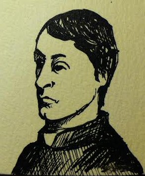

Wednesday, February the 19th, 2014
back to: title, date or indexes
Those of you who hold Gerard Manley Hopkins in awe—which I assume is every last one of you—should turn today to The Dabbler, where my sister Rita Byrne Tull explains how the great Victorian Jesuit priest was instrumental in setting the course of her life.

This sketch of Father Hopkins was drawn by my son Edwood Burn. A finished version of it will appear in Mr Key's Shorter Potted Brief, Brief Lives, alongside a score of other portraits.